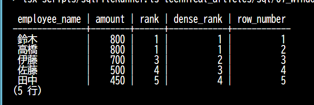
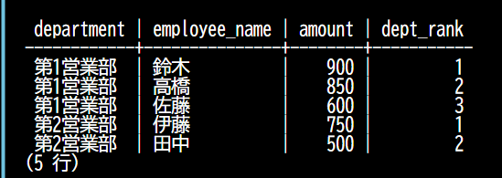
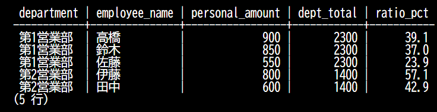
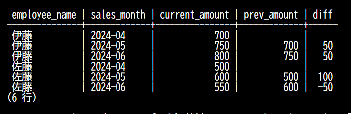
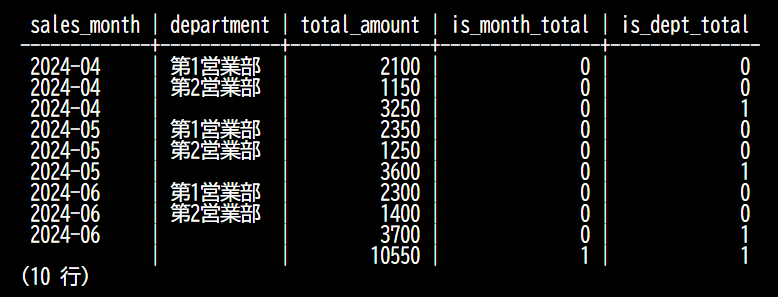

データベースで「各部門の平均売上」や「合計点」を出す際、私たちは当然のように GROUP BY を使ってきました。しかし、実務の現場では要件がより複雑になります。「個人の売上データ（明細）はそのまま表示しつつ、その横に部門の平均売上も並べて比較したい」や、「売上の高い順にランキング（順位）をつけたい」、さらには「部門ごとの小計と全社の総合計を一度のクエリで出力した美しいレポートを作りたい」といった要望です。
これらを通常の GROUP BY やサブクエリ（副問合せ）、自己結合（SELF JOIN）だけで解決しようとすると、SQLが非常に長く難解になり、データベースのパフォーマンスも著しく低下してしまいます。
このような複雑な分析要件を美しく、かつ高速に解決するものが「ウィンドウ関数（Window Functions）」と高度な「GROUPING機能」です。本記事では、講義の演習環境（PostgreSQL 17 コンテナ）を用いて以下のゴールを目指します。
GROUP BY とウィンドウ関数の決定的な違いを視覚的に理解し、用途を明確に分ける。RANK, ROW_NUMBER を用いたランキング処理の微妙な挙動の違いを実装レベルで把握する。LAG / LEAD を用いた「前月比」などの高度な時系列分析クエリを自力で書けるようになる。ROLLUP と GROUPING() 関数を使いこなし、小計・総合計を一発で出力する技術を習得する。本記事の SQL は、以下の環境で動作確認を行っています。読者の皆さんも、ご自身の演習環境で実際に手を動かしながら読み進めてください。自分でクエリを叩き、結果のテーブルを見比べることが最大の学習になります。
psql -U postgres -d postgres -h localhost 等のコマンドを実行し、確実にデータベースに接続できていることを確認してから実験に進んでください。ウィンドウ関数とGROUPINGの挙動を確認するため、営業担当者の月ごとの売上データを管理する sales_records テーブルを作成します。
-- 売上管理テーブルの作成
DROP TABLE IF EXISTS sales_records;
CREATE TABLE sales_records (
id serial PRIMARY KEY, -- serial: 自動採番
sales_month text NOT NULL, -- 売上月 (例: '2024-04')
department text NOT NULL, -- 部署 (例: '第1営業部')
employee_name text NOT NULL, -- 社員名
amount int NOT NULL -- 売上金額（万円）
);ウィンドウ関数を理解する上で最も重要なのは、通常の「GROUP BY（集約処理）」とのアプローチの違いを明確にすることです。
部署ごとの「合計」や「平均」は出せますが、行が圧縮されるため、佐藤さん・鈴木さんといった個別の明細データは完全に失われます。
行を圧縮しません。元の行（明細）を残したまま、その横に集計結果や順位を新たな列としてくっつけることができます。
この「計算の対象となる行のまとまり（上の例では『第1営業部』というくくり）」のことを、切り取られた窓枠に例えてウィンドウ（窓）と呼びます。
ウィンドウ関数は、通常の関数の後ろに OVER() 句を続ける特殊な構文を持ちます。
SELECT
列名,
ウィンドウ関数() OVER (
[PARTITION BY グループ化する列]
[ORDER BY 並べ替える列]
[フレーム指定 (ROWS / RANGE BETWEEN ...)]
)
FROM テーブル名;▼具体例：部署ごとに売上の高い順に順位をつける
SELECT
employee_name,
department,
amount,
RANK() OVER (
PARTITION BY department -- 部署ごとにウィンドウ（計算の枠）を分割する
ORDER BY amount DESC -- その枠の中で、売上金額（amount）が高い順に並べ替える
) AS dept_rank -- 計算結果の列に「dept_rank」と名前をつける
FROM sales_records;このように、OVER() 句の中に「どのようにグループを区切るか」「どのような順序で計算するか」という条件を記述していくのが、ウィンドウ関数の基本的な書き方です。
ウィンドウ関数として使える関数は、用途によって大きく3つのグループに分類されます。実務で求められる分析要件に応じて適切に使い分ける必要があります。
| 種類 | 代表的な関数 | 用途・特徴と具体的な利用シーン |
|---|---|---|
| 順序付け関数 (ランキング) |
RANK(), DENSE_RANK(), ROW_NUMBER() |
売上ランキングの作成や、「各ユーザーの最新のログイン履歴を1件だけ取得する」といった用途で多用されます。同率順位が出た際の「順位の飛び方」に明確な違いがあります。 |
| ナビゲーション関数 (オフセット) |
LAG(), LEAD(), FIRST_VALUE(), LAST_VALUE() |
行と行をまたいだ値の参照を可能にします。LAG() は「前の行」、LEAD() は「次の行」の値を取得します。売上の前月比計算、アクセスログの滞在時間（次のページへの遷移時間）の計算などに劇的な威力を発揮します。 |
| 集約関数 | SUM(), AVG(), MAX(), MIN(), COUNT() |
GROUP BY で使う通常の集約関数も、OVER() をつけることでウィンドウ関数に変身します。全体合計に対する個人の「売上構成比」や、日々の「累計売上」を計算する際に重宝します。 |
ウィンドウ関数を使いこなすために重要なのは、OVER() の中で「どの範囲の行を、どういう順番で計算対象にするか」を正確に定義することです。主に以下の3要素で構成されます。
GROUP BY に似ていますが、前述の通り行は圧縮されません。「部署ごとに順位をつけたい（部署が変わったら1位からやり直す）」場合は PARTITION BY department と指定します。省略した場合は「テーブル全体の行」が1つの巨大なウィンドウとして扱われます。LAG（前の行を取得）を正しく機能させるための前提条件となります。ORDER BY で並べた行の中で、「ここからここまで」というさらに細かな計算範囲（サブウィンドウ：フレーム）を指定します。たとえば「直近の過去1ヶ月と現在の月（2ヶ月の移動平均）」といった、株価チャートのような高度な集計が可能になります。
集約関数（SUMなど）をウィンドウ関数として使う際、OVER() の中に ORDER BY を記述すると、PostgreSQLは自動的に「最初の行から現在の行まで（ROWS BETWEEN UNBOUNDED PRECEDING AND CURRENT ROW）」という計算範囲（フレーム）を暗黙的に設定します。
これにより、結果が「全体の合計」ではなく「（現在の行の）そこまでの累計」に変化するという非常に重要な性質があります。この法則を知らないと、「合計を出したいのに、なぜか行ごとに増えていく累計になってしまう…」と沼にハマることになります。
ウィンドウ関数は「明細行を残す」機能でしたが、実務のレポート作成などでは全く逆の要望が出ます。それが、「部門ごとの小計行」や「全社の総合計行」といった高度に集約されたサマリー行を、通常の明細（または細かい粒度の集計）の間に差し込みたい、というケースです。
これをサブクエリや UNION ALL（別々のクエリ結果を縦に繋ぐ処理）を使って力技で実現しようとすると、同じテーブルを何度も読み込むことになり、クエリの実行速度が絶望的に遅くなります。
これを解決するのが、1回の読み込みで小計・総合計を一発で生成してくれる高度な GROUP BY 拡張機能です。
ROLLUP 等を使って小計行を生成すると、その行の集約の基準とならなかった列（例えば部門ごとの小計行における、担当者名の列など）には NULL が入ります。
しかし、実データに元々NULLが含まれていた場合、「データとしての本物のNULLなのか」、それとも「ROLLUPが生成した集計行の証拠としてのNULLなのか」が見分けられなくなります。そこで GROUPING(列名) 関数を使います。
この関数は、集約によって生成されたNULLであれば 1 を、それ以外の通常のデータ（本物のNULL含む）なら 0 を返します。この性質を利用し、レポートのラベルを「NULL」から「総合計」といった人間に読みやすい文字へ置換する際になくてはならない関数です。
理論を押さえたところで、実際にコンテナ環境を用いて検証を進めます。ご自身のターミナルで結果を確かめながら進めてください。
本実験を進める前に、第1章で紹介した sales_records テーブルの作成（CREATE TABLE）が完了していることを確認してください。
テーブルの準備ができたら、以下のSQLを実行してダミーデータを挿入します。今回はウィンドウ関数の複雑な挙動を目で見て確認しやすくするため、あえて少量のデータ（全15件）を手動で投入します。
-- 15件のテストデータを挿入
INSERT INTO sales_records (sales_month, department, employee_name, amount) VALUES
('2024-04', '第1営業部', '佐藤', 500),
('2024-04', '第1営業部', '鈴木', 800),
('2024-04', '第1営業部', '高橋', 800),
('2024-04', '第2営業部', '田中', 450),
('2024-04', '第2営業部', '伊藤', 700),
('2024-05', '第1営業部', '佐藤', 600),
('2024-05', '第1営業部', '鈴木', 900),
('2024-05', '第1営業部', '高橋', 850),
('2024-05', '第2営業部', '田中', 500),
('2024-05', '第2営業部', '伊藤', 750),
('2024-06', '第1営業部', '佐藤', 550),
('2024-06', '第1営業部', '鈴木', 850),
('2024-06', '第1営業部', '高橋', 900),
('2024-06', '第2営業部', '田中', 600),
('2024-06', '第2営業部', '伊藤', 800);▼初期状態の sales_records テーブル（全15件）
これから行う実験は、すべてこのデータセットに対して実行されます。誰がどの月にいくら売り上げたか、イメージをつかんでおきましょう。
| id | sales_month | department | employee_name | amount |
|---|---|---|---|---|
| 1 | 2024-04 | 第1営業部 | 佐藤 | 500 |
| 2 | 2024-04 | 第1営業部 | 鈴木 | 800 |
| 3 | 2024-04 | 第1営業部 | 高橋 | 800 |
| 4 | 2024-04 | 第2営業部 | 田中 | 450 |
| 5 | 2024-04 | 第2営業部 | 伊藤 | 700 |
| 6 | 2024-05 | 第1営業部 | 佐藤 | 600 |
| 7 | 2024-05 | 第1営業部 | 鈴木 | 900 |
| 8 | 2024-05 | 第1営業部 | 高橋 | 850 |
| 9 | 2024-05 | 第2営業部 | 田中 | 500 |
| 10 | 2024-05 | 第2営業部 | 伊藤 | 750 |
| 11 | 2024-06 | 第1営業部 | 佐藤 | 550 |
| 12 | 2024-06 | 第1営業部 | 鈴木 | 850 |
| 13 | 2024-06 | 第1営業部 | 高橋 | 900 |
| 14 | 2024-06 | 第2営業部 | 田中 | 600 |
| 15 | 2024-06 | 第2営業部 | 伊藤 | 800 |
想定シーン： 2024年4月の売上データにおいて、売上が高い順に社員のランキング表を作成したい。
検証の狙い： 順位をつける代表的な3つのウィンドウ関数の挙動の違いを比較します。特に「鈴木さんと高橋さんが800万円で同率」というケースにおいて、順位がどのように採番されるかに注目します。
SELECT
employee_name,
amount,
RANK() OVER (ORDER BY amount DESC) AS "rank",
DENSE_RANK() OVER (ORDER BY amount DESC) AS "dense_rank",
ROW_NUMBER() OVER (ORDER BY amount DESC) AS "row_number"
FROM sales_records
WHERE sales_month = '2024-04';▼ターミナル出力結果

想定シーン： 会社全体の売上ランキングではなく、「部署ごとの」売上トップは誰か？を一覧で取得したい。
検証の狙い： OVER() 句の中に PARTITION BY を追加することで、ウィンドウ（計算対象の枠）がグループごとに分割され、部署が変わるたびに順位がリセットされることを確認します。
SELECT
department,
employee_name,
amount,
RANK() OVER (PARTITION BY department ORDER BY amount DESC) AS dept_rank
FROM sales_records
WHERE sales_month = '2024-05';▼ターミナル出力結果
department（部署）が「第1営業部」から「第2営業部」に切り替わったタイミング（伊藤さんの行）で、dept_rank が再び「1」から再スタートしていることが明確にわかります。PARTITION BY が「計算の窓枠を部署ごとに区切っている」という何よりの証拠です。
想定シーン： 各社員の売上が、所属する部署全体の売上の「何パーセント（構成比）」を占めているかを計算して出力したい。
検証の狙い： SUM() などの通常の集約関数も、OVER() をつけることでウィンドウ関数として機能し、「個人の明細行を残したまま、部署の全体合計を取得できる」という強みを検証します。
SELECT
department,
employee_name,
amount AS personal_amount,
-- 部署内の合計売上を計算（ORDER BYがない点に注意。累計ではなく純粋な合計になる）
SUM(amount) OVER (PARTITION BY department) AS dept_total,
-- 構成比の計算（個人売上 ÷ 部署合計 × 100）
ROUND(amount * 100.0 / SUM(amount) OVER (PARTITION BY department), 1) AS ratio_pct
FROM sales_records
WHERE sales_month = '2024-06'
ORDER BY department, amount DESC;▼ターミナル出力結果
GROUP BY では社員名（明細）が消えてしまいますが、出力結果を見ると「高橋」といった個人名がしっかり残っています。それなのに、そのすぐ横の dept_total 列には「第1営業部の合計値（2300）」や「第2営業部の合計値（1400）」が正しく入っています。900 ÷ 2300 といった構成比の計算（ratio_pct）がシンプルなSQLで実現できました。
想定シーン： 各社員の月ごとの売上推移を追い、「先月の売上」と比較してどれくらい成長したか（前月差額）を出したい。
検証の狙い： 行と行をまたいだ比較が簡単にできる LAG()（前の行を取得）関数の威力を体感します。アプリケーション側でループ処理を書かなくても、SQLだけで時系列の比較計算が完結することを確認します。
SELECT
employee_name,
sales_month,
amount AS current_amount,
-- PARTITION BY で社員ごとに分割し、sales_month 順に並べた際の「1つ前の行」を取得
LAG(amount) OVER (PARTITION BY employee_name ORDER BY sales_month) AS prev_amount,
-- 前月との差額
amount - LAG(amount) OVER (PARTITION BY employee_name ORDER BY sales_month) AS diff
FROM sales_records
WHERE employee_name = '佐藤' OR employee_name = '伊藤'
ORDER BY employee_name, sales_month;▼ターミナル出力結果
prev_amount は、比較対象となる「前の月」が存在しないため正しく NULL になっています。一方で5月、6月の行には、見事にその人の「1ヶ月前の売上」がズレて入り込んでおり、差額（diff）も 100 や -50 と正確に計算されています。LAG() や LEAD() ならではの強力なメリットです。
想定シーン： 売上レポートを作成するために、「各部署ごとの売上合計（小計）」と、「全社の売上合計（総合計）」を1つのクエリで同時に出力したい。
検証の狙い： 単純な GROUP BY を拡張する ROLLUP 機能と、集計によって生成された行（NULL行）を正確に判別する GROUPING() 関数の使い方を学びます。
SELECT
sales_month,
department,
SUM(amount) AS total_amount,
-- GROUPING関数は、その列が集約（ROLLUP等で計算）されてできたNULLなら「1」を返す
GROUPING(sales_month) AS is_month_total,
GROUPING(department) AS is_dept_total
FROM sales_records
GROUP BY ROLLUP(sales_month, department)
ORDER BY sales_month, department;▼ターミナル出力結果
GROUP BY ROLLUP(sales_month, department) と指定したことで、出力結果の中に「月と部署の組み合わせ」「各月の小計（departmentが空白）」「全社の総合計（月も部署も空白）」の3パターンが一度のクエリで生成されています。is_month_total と is_dept_total のフラグです。これらが「1」になっていることで、その空白（NULL）が「ROLLUPによって作られた集計用の枠である」と明確に判別できています。このフラグを後述の演習問題5で活用します。
ウィンドウ関数とGROUPINGの威力を理解したところで、以下の5つの実践問題に挑戦してみましょう。実務のデータ分析で必ず求められるレベルのクエリです。
【問題】
「田中」さんの月ごとの売上と、その月までの「累計売上（cumulative_sum）」を計算するクエリを書いてください。
解答例：
SELECT
sales_month,
amount,
SUM(amount) OVER (ORDER BY sales_month) AS cumulative_sum
FROM sales_records
WHERE employee_name = '田中'
ORDER BY sales_month;
解説： 集約関数の SUM() をウィンドウ関数として使いますが、実験Cのように PARTITION BY のみを使うと「全体の合計」になります。しかし、OVER() の中に ORDER BY を指定すると、デフォルトで「最初の行から現在の行までの範囲」を集計する（＝累計になる）という非常に重要な特性（暗黙のフレーム指定ルール）を利用しています。
【問題】
2024年6月のデータで、「各部署」ごとに売上が上位1名の社員だけを抽出するクエリを記述してください。（同率1位はいないものとします）。
ヒント：ウィンドウ関数を含む列は、そのまま WHERE 句には書けないため、サブクエリ（またはCTE：WITH句）を使う必要があります。
解答例：
WITH RankedSales AS (
SELECT
department,
employee_name,
amount,
ROW_NUMBER() OVER (PARTITION BY department ORDER BY amount DESC) as rnk
FROM sales_records
WHERE sales_month = '2024-06'
)
SELECT department, employee_name, amount
FROM RankedSales
WHERE rnk = 1;
解説： SQLの実行順序（WHERE句はSELECT句より先に評価される）の制約上、WHERE ROW_NUMBER() OVER(...) = 1 と直接書くことはできません。そのため、WITH句（CTE）を使って一度ランキング付きの仮想テーブルを作成し、メインクエリで rnk = 1 を絞り込むのが、実務における王道パターンです。
【問題】
「佐藤」さんの売上について、当月と「直近の過去1ヶ月」を含めた「2ヶ月移動平均」を求めるクエリを記述してください。ウィンドウフレーム指定（ROWS BETWEEN）を利用します。
解答例：
SELECT
sales_month,
amount,
AVG(amount) OVER (
ORDER BY sales_month
ROWS BETWEEN 1 PRECEDING AND CURRENT ROW
) AS moving_avg
FROM sales_records
WHERE employee_name = '佐藤'
ORDER BY sales_month;
解説： ROWS BETWEEN X PRECEDING AND CURRENT ROW（X行前から現在の行まで）というフレーム指定を行うことで、柔軟な移動平均や範囲集計が可能になります。株式チャートの「25日移動平均線」なども、この仕組みで非常にシンプルに計算できます。
【問題】
「第1営業部」の月ごとの合計売上を算出し、さらに「前月と比較して何パーセント成長したか（前月比）」を計算するクエリを記述してください。（例: 前月500、当月600なら120%）。
解答例：
WITH MonthlySales AS (
SELECT
sales_month,
SUM(amount) AS total_amount
FROM sales_records
WHERE department = '第1営業部'
GROUP BY sales_month
)
SELECT
sales_month,
total_amount,
LAG(total_amount) OVER (ORDER BY sales_month) AS prev_amount,
ROUND(total_amount * 100.0 / LAG(total_amount) OVER (ORDER BY sales_month), 1) AS growth_pct
FROM MonthlySales;
解説： まず通常の GROUP BY を使ったCTE（WITH句）で「月ごとの合計売上」を出します。次に、その集計結果に対して LAG() 関数を適用して前月データを持ってきて割り算します。「GROUP BYの集計結果に対して、さらにウィンドウ関数をかける」という実務で頻出するコンボ技です。
【問題】
実験Eで使用した ROLLUP のクエリを応用し、GROUPING() が「1」を返した場合（つまり小計や総合計の行の場合）は、NULL と表示するのではなく、文字列として「【総合計】」や「【小計】」という文字を出力するような、見やすい集計レポートを出力するクエリを記述してください。
ヒント：CASE 文を使います。
解答例：
SELECT
CASE
WHEN GROUPING(sales_month) = 1 THEN '【総合計】'
ELSE sales_month
END AS sales_month,
CASE
WHEN GROUPING(department) = 1 AND GROUPING(sales_month) = 0 THEN '【小計】'
ELSE COALESCE(department, '')
END AS department,
SUM(amount) AS total_amount
FROM sales_records
GROUP BY ROLLUP(sales_month, department)
ORDER BY sales_month, department;
解説： GROUPING() 関数は、まさにこのように「レポートの見た目を整える」ために存在しています。CASE 文と組み合わせることで、「月も部署もNULL（＝全体集計）なら総合計」「部署だけがNULL（＝月次集計）なら小計」といった柔軟なラベル付けが可能になり、アプリケーション側（フロントエンド）で加工する手間が省けます。
本記事では、SQLの表現力を飛躍的に高める「ウィンドウ関数」と「GROUPING機能」について学習しました。
GROUP BY と違い、明細行を保持したまま集計や順位付けができる。RANK や ROW_NUMBER で柔軟なランキングが作れる。LAG や累計計算により、複雑なプログラムを書かずともSQLだけで高度な時系列分析が可能になる。ROLLUP と GROUPING を使えば、一発で小計・総合計を含む美しいレポートデータが生成できる。データ分析やバックエンド開発の実務において、これらの関数を使いこなせるかどうかで、コードのシンプルさとシステムのパフォーマンスが劇的に変わります。演習環境のダミーデータをいろいろと書き換えて、ぜひ様々なパターンの分析クエリを試してみてください。